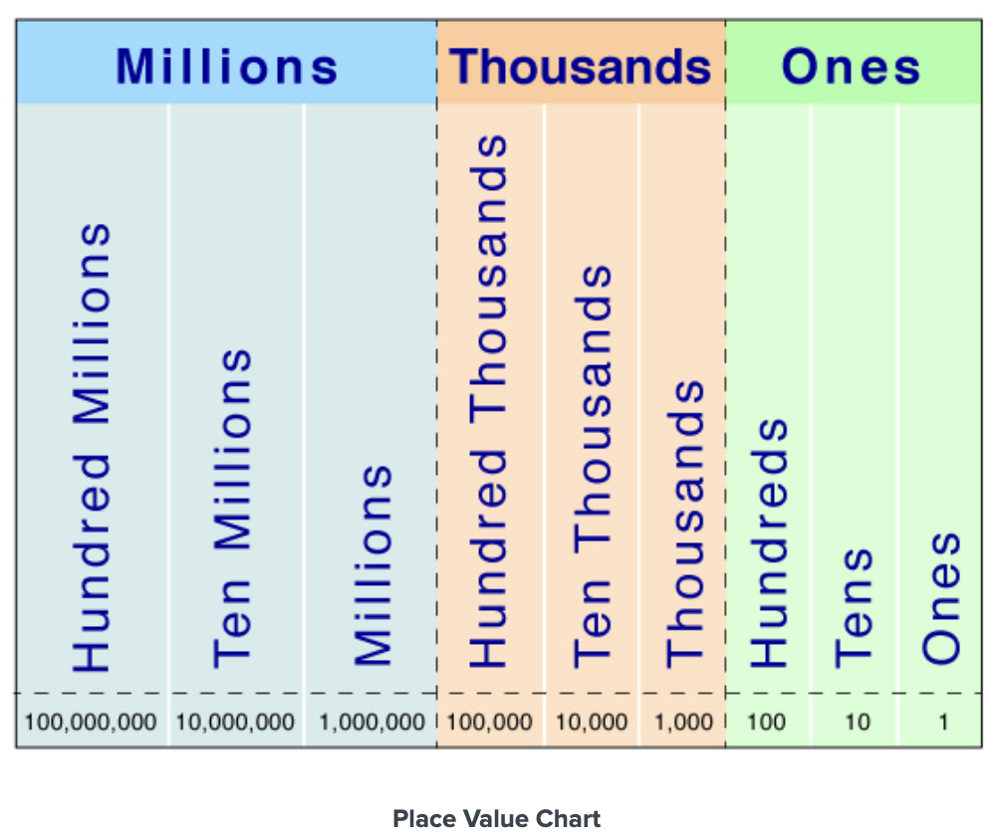

A basic review of sets
Sets are how we group objects in Mathematics.
Objects can take many different forms — They can be numbers, people, letters, and even other sets. We call these objects the elements of a set.
We describe a set by listing all the objects1 in the set and enclosing the list in curly braces -> {}.
For example:
$ \text{Set} = \lbrace \text{Dog}, \text{Cat}, \text{Fish} \rbrace $
is the set of animals that includes dogs, cats and fishes.
Now, if our sets are infinite, we write our sets including three dots (...) at the end. This will indicate whatever sequence we are following will continue.
For example, the set of natural - or counting - numbers is represented by the set:
$ \text{Set} = \lbrace 1,2,3,4,5,6,... \rbrace $
The naural - or counting - numbers are any numbers greater than zero and whole.
You see how the pattern we are following is easily understood by a reader. You yourself will have deduced that the set countinues indefinitely by adding one to the previous number.
What we can not do, is create an infinite set for which there's no clear implicit or explained pattern
Such as:
$ \text{Set} = \lbrace 2,4,5,8,12,21,25,... \rbrace $
Note that there's no clear pattern here. We're doubling the first number, then adding one, adding three, adding four, adding nine, and then adding four. One could say we could just keep on repeating that pattern indenfinitely, and they'd be correct, but with no clear explanation as to why, this would not be a useful set.
Coming back to known mathematical sets2, if we add the number zero to the set of natural numbers, we get the set of whole numbers.
And if we have a set consiting of the numbers zero through nine we call that the set of digits - since these are the numbers from which we construct bigger whole numbers. Notice that the whole number 434 (Four hundred thirty-four ) are just the digits 4, 3 and 4.
So we have:
The set of natural numbers
$ \text{Set} = \lbrace 1,2,3,4,5,6,\dots \rbrace $
The set of whole numbers
$ \text{Set} = \lbrace 0,1,2,3,4,5,6,\dots \rbrace $
The set of digits
$ \text{D} = \lbrace 0,1,2,3,4,5,6,7,8,9 \rbrace $
Sets are an important part of basic mathematical understanding. They're useful because they provide us with an easy way of organizing and grouping information.
Sets also help us with things like:
- Classifying information, so that we know what rules apply to what group (say, integers vs whole numbers).
- Defining relationships, since sets make it easy to visualize how groups overlap or differ (with tools like venn diagrams)
- Base foundation, since set theory helps glue much of the concepts of higher-level mathematics like probability, functions, or geometry.3
A basic review of the number line
In a number line, we call the distance between one number and another the unit lenght.
So:
←───|───|───→
0 1
The distance we see between zero and one, is what we call the unit lenght. To continue writing a number line, we'd simply start adding numbers left or right with the distance of our defined unit lenght.
Like so:
←───|───|───|───|───→
0 1 2 3
Notice how every number is the same distance from each other - following our defined unit lenght.
Through the graphing of whole numbers in a number line, we understand that as we move to the left, numbers get smaller, and as we move to the right, numbers get bigger.
This allows us to come to the definition that
←───|───|───→
A B
If A and B are whole numbers in a number line, the A < B, and, and B > A.
The symbol "<" represents smaller than, and the symbol ">" represents bigger than.
So 1 < 2 and 5 > 3
The comparisson property tells us that when comparing two whole numbers A and B, only one of three possibilities is true.
- A > B
- A < B
- A = B
A basic review of place values
To understand how numbers are constructed, we need to understand the place value of digits.
The place values are:

This means that whenever we are trying to deconstruct a number, we simply write it out and see where each digit falls in the place value chart.
For instance, we would break the number 203,405 into
- 2 hundred thousands
- 0 ten thousands
- 3 thousands
- 4 hundreds
- 0 tens
- 5 ones
Now, just to hammer down the concept let's work through it. Let's stary off with translating words into numbers
- A hundred thousand = 100,000
- A ten thousand = 10,000
- A thousand = 1,000
- A hundred = 100
- A ten = 10
- A one = 1
Now it's just a matter of translating the words we wrote down for our number, to numbers. Let's re-write it to have it fresh in our minds.
Two hundred thousands, 0 ten thousands, 3 thousands, 4 hundreds, 0 tens, and 5 ones.
Now we just translate words into numbers
$ 100,000 + 100,000 + 0 + 1,000 + 1,000 + 1,000 + 100 + 100 + 100 + 100 + 0 + 1 + 1 + 1 + 1 + 1 = 203,405 $
We could also simplify this to be
$ (100,000 \times 2) + (10,000 \times 0) + (1,000 \times 3) + (100 \times 4) + (10 \times 0) + (1 \times 5) = 203,405 $
Finally, to say numbers correctly, we can follow these steps
- We group our number following the commas
- We say each group with its unit word
So, for 203,405 we would
- Group by commas, so 203 and 405
- Say each group by its unit word, so 203 thousand, and 405 five
We can group it all together and say two hundred three thousand, four hundred five.
(1) We will see in just a minute that there's one exception of this, which is when our sets are infinite
(2) Meaning sets you will often hear referenced
(3) Hopefully we will see this applied later on. But consider for instance the probability problem "What is the chance of rolling an even number or a number greater than four? - to solve this we would basically just be counting sets (the set of even numbers and the set of the numbers greater than 4).